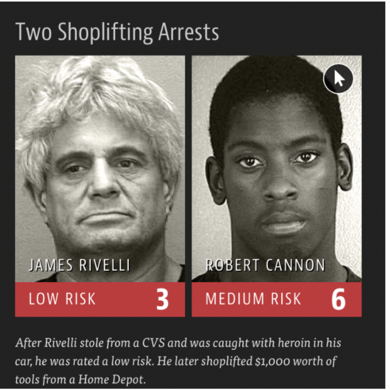

Hi, I am Kishika Mahajan!
I study Policy at the University of Chicago and am a data enthusiast passionate about leveraging analytics to drive social impact and influence policy. Guided by evidence-based decision-making, I strive to uncover insights that foster meaningful change. My work spans geospatial analysis, predictive modeling, and beyond. Explore some of my projects below!
Commercialisation of National Parks in India
This project dives into the impact of national park commercialization in India by analyzing forest cover changes and economic activity using high-resolution Nighttime Lights and Forest Cover data from SHRUG. Focusing on Jim Corbett National Park and Pench Tiger Reserve, we uncover how development and conservation intersect at the village and town level.
Predicting Recidivism Rates in California

The widely used COMPAS risk assessment model has been criticized for racial bias and unfair predictions. This project builds an alternative stacking model (Random Forest + XGBoost) to predict recidivism, comparing its fairness and accuracy against COMPAS.
Differential Impacts of COVID-19 in India

This study analyzes district-level data, focusing on the Indo-Gangetic Plain, a region with severe pollution and limited healthcare. Using PCA and K-Medoids clustering, the study reveals that age distribution and migration trends, rather than pollution or infrastructure, were the strongest predictor of mortality.
Non-Natural Causes of Death in Cook County
This project builds a comprehensive multi-page dashboard to analyze non-natural causes of death in Cook County, providing critical insights for policymakers, public health officials, and community organizations. By leveraging data visualization and spatial analysis, the dashboard highlights geographic disparities, helping stakeholders identify high-risk areas and design targeted interventions for disadvantaged communities.
This project scrapes detailed information about Goa’s historic churches from
this website using a Python script and enriches the data by extracting precise geographic coordinates via Google APIs with an R script. At the end, the churches are plotted on the map of India.
Predicting Diseases in Tanzania
Climate change is worsening water scarcity in Tanzania, leading to increased outbreaks of typhoid, dysentery, and diarrhea, especially in vulnerable communities with limited healthcare access. This project builds an ML model to predict disease cases at healthcare facilities using climate data from water sources, toilets, and waste management sites nearby. By analyzing data from 2019 to 2022, this model aims to provide early warnings and support targeted interventions to reduce the health burden of unsafe water.